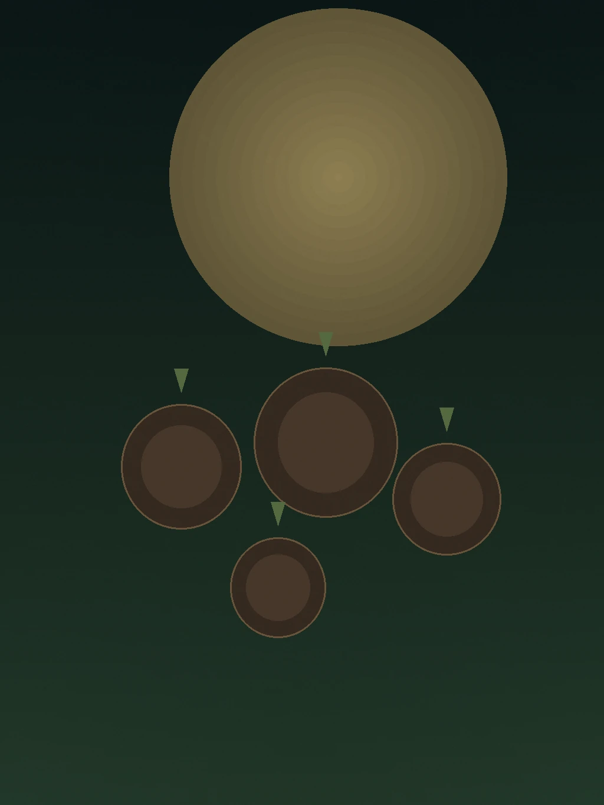
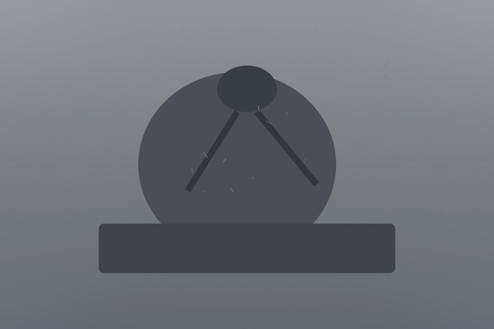
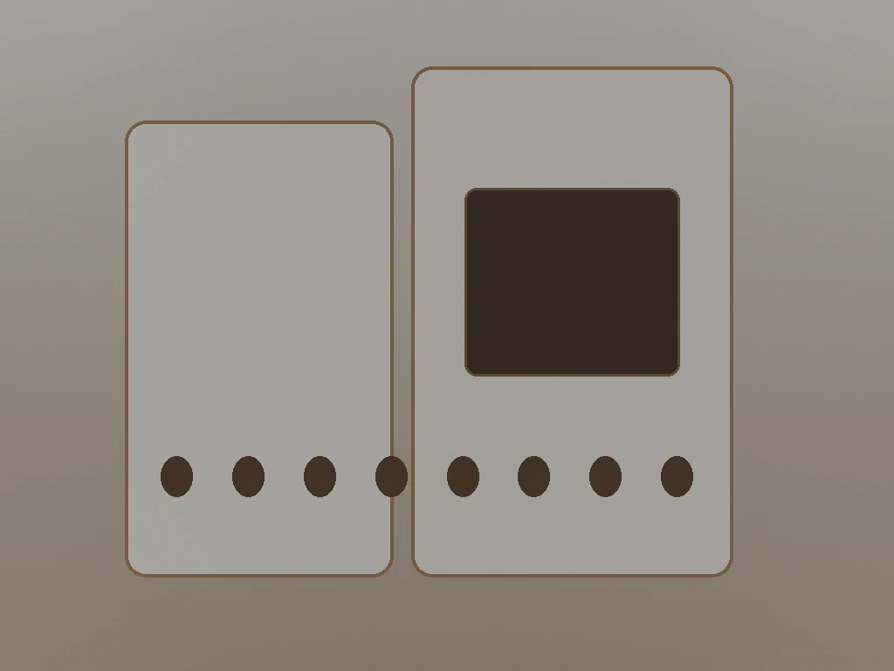

国産・無農薬にんにくを、温度・湿度・時間などの「熟成条件」からデータで管理。
ロットごとのばらつきを抑え、狙った体験に近づける黒にんにくです。

「体は整えたい。でも“厚み”は増やしたくない。」
「重だるさがいちばんの敵。軽く動ける状態でいたい。」
「合成サプリを続けるのが不安。まず食から整えたい。」
「回復はしたい。でも体重は増やしたくない。」
回復のために、何かを足し続けると——
そこで農筋AIは、「足す」のではなく、
“熟成で整える”という別ルートを作りました。

熟成条件をAIで管理し、体験のばらつきを抑える黒にんにく。
一般的な黒にんにくは、一定条件や職人の経験によって熟成されます。農筋AIは、温度・湿度・時間などの熟成条件をデータで管理し、熟成中の変化を見ながら、狙うバランスへ近づけます。
熟成庫の温度／湿度／時間を管理
ロット差を見える化し、狙う品質へ寄せる
将来的に「目的別ロット」や「設計」へ拡張可能
重さを足さずに、キレを戻す。タイト・リカバリー習慣。
朝の立ち上がりを整えたい方に
(すっきり感をサポート)
日中のだるさが気になる方に
(コンディション維持をサポート)
内側からの習慣を作りたい方に
(食で整える選択肢として)
続けやすい自然な甘み
(黒にんにく特有の食べやすさ)
※本ページは食品としての一般情報です。感じ方には個人差があります。
※数値は「測定値」または「自社基準」に基づくものです。
生にんにくを熟成・発酵させることで、
日々の習慣に、圧倒的に取り入れやすいのが特徴です。
約◯日分（チャック付きスタンド袋）

毎月自動でお届け・手間いらず
通常 ¥〇,〇〇〇
農筋AIは、安さではなく「続けられる品質」を優先しています。
使われなくなった農地を、もう一度“畑”としてよみがえらせる。
農筋AIの黒にんにくは、その再生の現場から生まれています。
畑が動くと、土地が整い、人が関わり、地域に仕事が生まれ、次の挑戦が始まります。
私たちは、黒にんにくを通して「食と職が巡る社会」に近づけたいと考えています。
「朝の立ち上がりが楽になった気がする」
「プルーンみたいで凄く美味しい。これなら続けやすい味で助かる。」
「ただのサプリより“自然のものを食べてる感”があって精神的にも安心できます。」
※個人の感想であり、感じ方には個人差があります。
熟成により生にんにく特有の強い刺激は和らぎます。感じ方には個人差があるため、気になる方は量やタイミング（夜間や休日前など）を調整してください。
まずは1片から。慣れてきたら1〜2片を目安に、体調と相談しながら続けてください。
食品ですが、体質によって合わない場合があります。まずはごく少量から様子を見てお召し上がりください。
自然の食品ですが、ご心配がある場合はかかりつけの医師へご相談いただいた上でご検討ください。
直射日光を避け、涼しい場所で保管してください。開封後はチャックをしっかり閉じ、お早めにお召し上がりください。夏場は冷蔵庫での保存をおすすめします。
はい、［〇回以上の継続縛りなどはございません］。次回お届け予定日の［〇日前］までに［マイページまたはお問い合わせ窓口］よりご連絡いただければ、いつでも休止・解約が可能です。